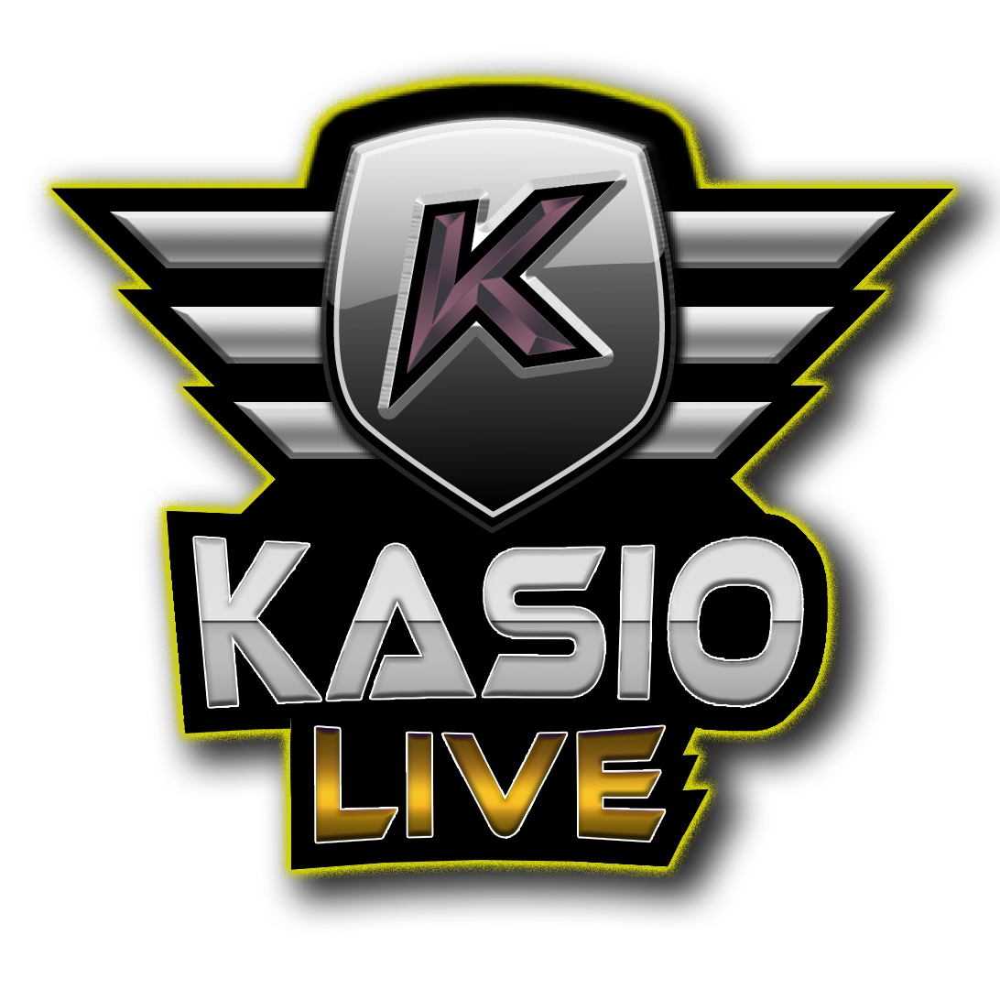

En mis ratos libres disfruto realizando streamings y grabando vídeos para internet. La temática es muy diversa ya que los streamings puedes ser sobre videojuegos, sobre fútbol o sobre lo que me apetezca en ese momento.
No es un proyecto que me rienda a nivel económico porque no dispongo del tiempo suficiente como para poder monetizar las emisiones, ni tampoco dispongo de muchos seguidores ya que tampoco he hecho ningun tipo de campaña en redes sociales para darme a conocer. Simplemente lo hago porque me encanta el mundo audiovisual y en este campo puedo descubrir nuevas formas de dar rienda suelta a mi creatividad.
También he realizado diseños multimedia para las emisiones de otros streamers e incluso alguna edición de vídeos para que la genta los suba a sus canales de youtube.
Otra de las "pruebas" que he realizado ha sido la de, durante un partido de fútbol, comentarlo junto con otros compañeros y analizarlo en directo mostrando en vivo estadísticas, mapas de calor, movimientos o estrategias... todo esto siempre sin infringir las leyes de copyright. Esto ha sido muy bien valorado por la gente.
La mayoría de mis directos los realizo en la plataforma Twitch debido a que es la plataforma que más versatilidad ofrece y en la que se pueden realizar muchas más opciones teniendo menos restricciones.
También en base a esto he creado una imagen de marca digital bajo el nombre de Kasio Live, mantenindo la identidad creativa en todos los diseños gráficos, redes sociales y publicaciones siguiendo los estándar del marketing digital.
